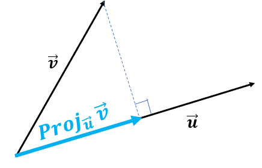

Use the sidebar for easy navigation.
Vectors
Scalars and Vectors
A scalar is any single element or component, like a real number (ex. x_1 \in \mathbb{R}.
A vector is a collection of scalars: (x_1 \ x_2 \ x_3 \ x_4). Each scalar is considered a element/component.
- Vectors can be both row vectors (horiztonal), and column vectors (vertical).
The dimension of a vector is the number of components/scalars/elements in the vector.
Vectors will be denoted with a bold lowercase letter: \mathbf x, to distinguish them from scalars x.
Vectors can be visualised graphically. Each element corresponds to a distance in a direction.
For example, take the vector (3 \ 2). Graphically:
If a vector has 3 dimensions, the graphical representation will be in 3 dimensions, and so on.
Vector Addition/Subtraction
Vector addition and subtraction is done just by adding the respective elements to each other:
\begin{pmatrix} 1 \\ 2 \end{pmatrix} + \begin{pmatrix} 3 \\ 4 \end{pmatrix} = \begin{pmatrix} 1+3 \\ 2+4 \end{pmatrix} = \begin{pmatrix} 4 \\ 6 \end{pmatrix}
- Vector addition only works if the two vectors are of the same dimensionality.
Vector addition can be viewed graphically. Take two 2-dimensional vectors \mathbf A and \mathbf B:

Vector Scalar Multiplication
Vector scalar multiplication is done by multiplying all elements of the vector by the scalar:
4 \times \begin{pmatrix} 1 \\ 2 \end{pmatrix} = \begin{pmatrix} 4 \times 1 \\ 4 \times 2 \end{pmatrix} = \begin{pmatrix} 4 \\ 8 \end{pmatrix}
Graphically, this just multiplies the length of the vector by the scalar (and if the scalar is negative, the direction switches 180 degrees).
Vector Normalisation
The norm of a vector is its length (when thinking graphically):
|| \mathbf{x}|| = \sqrt{x_1^2 + x_2^2 + \dots + x_n^2}
Normalizing a vector is scalar multiplying the vector by 1/||\mathbf{x} ||.
- This results in the norm of the vector equaling 1. This can be useful if you want to standardise and compare vectors.
Scalar Product
Scalar product, also known as dot product, takes two vectors and creates a scalar.
\mathbf a \cdot \mathbf b = \sum_i a_ib_i = a_1 b_1 + a_2 b_2+ \dots a_n b_n
- Essentially, multiply each respective element with each other. Then sum all of the products.
Let us do an example of scalar product:
\begin{pmatrix} 2 \\ 3 \end{pmatrix} \cdot \begin{pmatrix} 4 \\ 5 \end{pmatrix}
We multiply each respective element with each other, then sum all of the products:
2 \times 4 + 3 \times 5 = 8 + 15 = 23
Dot product calculates the projection/shadow of vector \mathbf a on vector \mathbf b. This is useful for multicollinearity.
The dot product calcualtes the length of the blue-highlighted line segment:

From here, we can tell if the two vectors are perpendicular, then the dot product would be 0.
Matrices
Definition of Matrix
A matrix is a collection of scalars, that are put in a n \times m order with n number of rows, and m number of columns.
\mathbf A_{2 \times 3} = \begin{pmatrix} 2 & 3 & 2 \\ 1 & 4 & 1 \end{pmatrix}
Matrices can be viewed as a set of row vectors combined, or a set of column vectors combined (this is how datasets are arranged).
Each element by the matrix can be denoted a_{ij}, which is the element in the ith row and jth column:
\mathbf A_{2 \times 3} = \begin{pmatrix} a_{11} & a_{12} & a_{13} \\ a_{21} & a_{22} & a_{23} \end{pmatrix}
Types of Matrices
There are several very common types of matrices that you need to know.
Square Matrix is a matrix that have an equal number of rows and columns.
\mathbf A_{2 \times 2} = \begin{pmatrix} a_{11} & a_{12} \\ a_{21} & a_{22} \end{pmatrix}
These are useful because many matrix manipulations, like inversions and determinants.
Zero Matrix is a square matrix with all 0’s.
Diagonal matrices only have elements along the top-left bottom-right diagonal.
\mathbf A_{3 \times 3} = \begin{pmatrix} a_{11} & 0 & 0 \\ 0 & a_{22} & 0 \\ 0 & 0 & a_{33} \\ \end{pmatrix}
An identity matrix (notated \mathbf I)is a diagonal matrix, but all the diagonal elements equal 1:
\mathbf I_{2 \times 2} = \begin{pmatrix} 1 & 0 \\ 0 & 1 \end{pmatrix}
- Any matrix times \mathbf I equals itself (like a 1 in normal multiplication).
A Lower/Upper Triangular Matrix is a matrix where only has values above/below the diagonal. For example, the following is a lower triangular matrix:
\mathbf A_{3 \times 3} = \begin{pmatrix} 1 & 0 & 0 \\ 3 & 4 & 0 \\ 3 & 3 & 4 \end{pmatrix}
A submatrix is a matrix if you were to remove a row and a column (that is specified by an element).
For example, take this 3 by 3 matrix:
\mathbf A_{3 \times 3} = \begin{pmatrix} a_{11} & a_{12} & a_{13} \\ a_{21} & a_{22} & a_{23} \\ a_{31} & a_{32} & a_{33} \end{pmatrix}
Let us find the submatrix of a_{21}. This means we will eliminate the 2nd row, and 1st column:
\mathbf A_{2 \times 2} = \begin{pmatrix} a_{12} & a_{13} \\ a_{32} & a_{33} \end{pmatrix}
A permutation matrix is a matrix that only has one non-zero element in each row and column.
\mathbf A_{3 \times 3} = \begin{pmatrix} 1 & 0 & 0 \\ 0 & 0 & 1 \\ 0 & 1 & 0 \end{pmatrix}
The identity matrix is a permutation matrix.
A singular matrix is one who’s determinant is zero. These cannot be inverted.
A non-singular matrix is one who’s determinant is not zero. These can be inverted. For non-singular matrices:
AA^{-1} = I
A block or partitioned matrix is a matrix which contains matrices within.
\mathbf A_{4 \times 4} = \begin{pmatrix} \mathbf A_{2 \times 2} & \mathbf B_{2 \times 2} \\ \mathbf C_{2 \times 2} & \mathbf D_{2 \times 2} \end{pmatrix}
- Note how the block matrix is 4 by 4, since if we expand out each matrix within, we would get a 4 by 4 matrix.
A block diagonal matrix is a block/partitioned matrix with only matrices on its diagonal:
\mathbf A_{4 \times 4} = \begin{pmatrix} \mathbf A_{2 \times 2} & 0 \\ 0 & \mathbf D_{2 \times 2} \end{pmatrix}
An orthogonal matrix is one with columns perpendicular to each other (when treating each column as a vector). In other words, the dot product of any two columns is zero.
\mathbf A_{3 \times 3} = \begin{pmatrix} 1 & 0 & 0 \\ 0 & 0 & 5 \\ 0 & 3 & 0 \end{pmatrix}
- The identity matrix is also orthogonal.
- Any matrix with one element in each row and column will be orthogonal.
An orthonormal matrix is an orthogonal matrix but the lengths/norms of all the columns is 1:
\mathbf A_{3 \times 3} = \begin{pmatrix} 1 & 0 & 0 \\ 0 & 0 & 1 \\ 0 & 1 & 0 \end{pmatrix}
Matrix Algebra
Matrix Transpose
The matrix transpose is a matrix flipped along its diagonal.
Or in other words, the rows and column locations of each element are inverted (essentially elements a^T_{ij} = a_{ji}):
\begin{pmatrix} 2 & 3 & 5 \\ 1 & 4 & 6 \end{pmatrix}^T = \begin{pmatrix} 2 & 1 \\ 3 & 4 \\ 5 & 6 \end{pmatrix}
- Notice how the first column became the first row, the second column became the second row.
- You can also get the transpose of a vector.
Matrix Addition/Subtraction
Matrix addition/subtraction is the same as vector addition - add the respective elements together:
\begin{pmatrix} 1 & 2 \\ 3 & 4 \end{pmatrix} + \begin{pmatrix} 5 & 6 \\ 7 & 8 \end{pmatrix} = \begin{pmatrix} 1 + 5 & 2 +6 \\ 3+7 & 4 + 8 \end{pmatrix} = \begin{pmatrix} 6 & 8 \\ 10 & 12 \end{pmatrix}
The dimensions of the matrix must be the same for addition to occur.
Matrix Scalar Multiplication
Matrix scalar multiplication is the same as vector scalar multiplication - multiply each element by the scalar:
3 \times \begin{pmatrix} 1 & 2 \\ 3 & 4 \end{pmatrix} = \begin{pmatrix} 3 \times 1 & 3 \times 2 \\ 3 \times 3 & 3 \times 4 \end{pmatrix} = \begin{pmatrix} 3 & 6 \\ 9 & 12 \end{pmatrix}
Matrix Plain Multiplication
Let us say you want to multiple matrix \mathbf A and \mathbf B to get a new matrix \mathbf C. The elements of \mathbf C are calculated as follows:
c_{ij} = \sum_ka_{ik}b_{kj} = a_{i1}b_{1j} + a_{i2}b_{2j} + a_{i3}b_{3j}\dots
In other words, c_{ij} is the dot product of the ith row of \mathbf A, and the jth column of \mathbf B.
Let us solve the following problem:
\begin{pmatrix} 2 & 1 \\ 3 & 5 \end{pmatrix} \begin{pmatrix} 6 & 1 \\ 2 & 3 \end{pmatrix} = \mathbf C
Let us do each dot product for each element of \mathbf C:
- c_{11} is the dot product of the 1st row of the 1st matrix, and the 1st column of the 2nd matrix: (2 \ 1) \cdot (6 \ 2). That means c_{11} = 2 \times 6 + 1 \times 2 = 12+2 = 14.
- c_{12} is the dot product of the 1st row of the 1st matrix, and the 2nd column of the 2nd matrix: (2 \ 1) \cdot (1 \ 3). That means c_{12} = 2 \times 1 + 1 \times 3 = 2 + 3 = 5.
- c_{21} is the dot product of the 2nd row of the 1st matrix, and the 1st column of the 2nd matrix: (3 \ 5) \cdot (6 \ 2). That means c_{21} = 3 \times 6 + 5 \times 2 = 18 + 10 = 28.
- c_{22} is the dot product of the 2nd row of the 1st matrix, and the 2nd column of the 2nd matrix: (3 \ 5) \cdot (1 \ 3). That means c_{22} = 3 \times 1 + 5 \times 3 = 3 + 15 = 18.
Thus, we now have our answer:
\begin{pmatrix} 2 & 1 \\ 3 & 5 \end{pmatrix} \begin{pmatrix} 6 & 1 \\ 2 & 3 \end{pmatrix} = \begin{pmatrix} 14 & 5 \\ 28 & 18 \end{pmatrix}
Matrix multiplication is only possible when the number of columns in \mathbf A is equal to the number of rows in \mathbf B.
- So for example, we can multiply \mathbf A_{2 \times 3} and \mathbf B_{3 \times 4}.
- We cannot multiply \mathbf A_{2 \times 3} and \mathbf B_{2 \times 3}.
The dimensions of product \mathbf C is the number of rows in \mathbf A and the number of columns in \mathbf B.
- So for example, if we multiply \mathbf A_{2 \times 3} and \mathbf B_{3 \times 4}, we will get \mathbf C_{2 \times 4}.
Also note: Matrix Multiplication does not have the commutative property: \mathbf A \mathbf B ≠ \mathbf B \mathbf A.
- Although there are two exceptions: \mathbf A \mathbf I = \mathbf I \mathbf A, and \mathbf A \mathbf A^{-1} = \mathbf A^{-1} \mathbf A.
Kronecker Product
Take the Kronecker Product of \mathbf A and \mathbf B:
\mathbf A \otimes \mathbf B = \mathbf C
Let us define \mathbf A and \mathbf B as the following:
\mathbf A_{2 \times 2} = \begin{pmatrix} a_{11} & a_{12} \\ a_{21} & a_{22} \end{pmatrix}, \ \mathbf B_{2 \times 2} = \begin{pmatrix} b_{11} & b_{12} \\ b_{21} & b_{22} \end{pmatrix}
The resulting Kronecker Product \mathbf C would be defined as a block matrix:
\mathbf C_{4 \times 4} = \begin{pmatrix} a_{11}\mathbf B & a_{12} \mathbf B \\ a_{21} \mathbf B & a_{22} \mathbf B \end{pmatrix}
Essentially, we treat \mathbf A as a collection of scalars. We scalar multiply each scalar element of \mathbf A by the matrix of \mathbf B.
If \mathbf A has dimensions n \times m, and \mathbf B has dimensions p \times q, then \mathbf C will have dimensions np \times mq.
Trace of a Matrix
The trace of \mathbf A is a sum of all diagonal elements.
Tr(\mathbf A) = \sum_i a_{ii} = a_{11} + a_{22} + \dots
Traces are used in Eigenvalues.
Determinant of a Matrix
Determinants tell us if a matrix is singular (and thus has no inverse). If the determinant is 0, then the matrix is singular.
The determinant is only computable for square matrices. For a 2 by 2 matrix:
|\mathbf A_{2 \times 2}| = \left| \begin{pmatrix} a_{11} & a_{12} \\ a_{21} & a_{22} \end{pmatrix} \right | = a_{11} a_{22} - a_{12}a_{21}
Let us find the determinant of the following matrix:
\mathbf B_{2 \times 2} = \begin{pmatrix} 2 & 3 \\ 1 & 4 \end{pmatrix}
Using the formula above:
|\mathbf B| = 2 \times 4 - 3 \times 1 = 8 - 3 = 5
Thus, this matrix is non-singular.
For 3 by 3, there is a method called the butterfly method to find the determinant. Take this matrix.
\mathbf A_{3 \times 3} = \begin{pmatrix} a_{11} & a_{12} & a_{13} \\ a_{21} & a_{22} & a_{23} \\ a_{31} & a_{32} & a_{33} \end{pmatrix}
The determinant is defined as following:
\begin{split} | \mathbf A| = & a_{11}a_{22}a_{33} + a_{12} a_{23} a_{31} + a_{13}a_{21}a_{32} \\ & -a_{31}a_{22}a_{13} - a_{11}a_{23}a_{32} - a{12}a_{21}a_{33} \end{split}
Laplace Expansion and Cofactors
For anything larger than a 3 by 3 matrix, we should us a Laplace expansion to find the determinant.
You choose a row or column of the matrix.
- For every element in that row or column, find the submatrix of that element.
- Calculate the determinant of each of the submatrices. This is called the minor.
- Now, convert the minors to cofactors. The cofactor is the minor times (-1)^{i+j}.
- Then, take each element, multiply by its cofactor. Sum all of these products together.
The final sum is the determinant of the matrix.
For example, take this matrix:
\mathbf A = \begin{pmatrix} 1 & 2 & 1 \\ 0 & 1 & 1 \\ 5 & 3 & 0 \end{pmatrix}
Let us expand over the 1st row (1 \ 2 \ 1 ). We expand over the submatrices of each element in that row.
- For a_{11} = 1, the submatrix is \begin{pmatrix} 1 & 1 \\ 3 & 0 \end{pmatrix}, and the determinant/minor of that is 1 \times 0 - 1 \times 3 = -3.
- For a_{12} = 2, the submatrix is \begin{pmatrix} 0 & 1 \\ 5 & 0 \end{pmatrix}. The determinant/minor of that is 0 - 5 = -5.
- For a_{13} = 1, the submatrix is \begin{pmatrix} 0 & 1 \\ 5 & 3 \end{pmatrix}. The determinant/minor of that is 0 - 5 = -5.
Now, let us find the cofactors (-1)^{i + j} \times \text{minor}:
- For a_{11}, the cofactor is (-1)^2 \times -3 = 1 \times -3 = -3.
- For a_{12}, the cofactor is (-1)^3 \times -5 = -1 \times -5 = 5.
- For a_{13}, the cofactor is (-1)^4 \times -5 = 1 \times -5 = -5.
Now, take each element, multiply by its cofactor. Sum all of these products together.
1(-3) + 2(5) + 1(-5) = -3 + 10 - 5 = 2
Thus, the determinant of the matrix is 2.
This works for any matrix of any size, for any row or any column.
- So, you should choose rows/columns with more 0’s, since the final sum involves multiplying the element with the cofactor, and if the element is 0, then you don’t have to consider it.
Matrix Inverse
If you take a matrix \mathbf A, and multiply by the inverse \mathbf A^{-1}, the result will be the identity matrix \mathbf{I}.
You can invert any square matrix that does not have a determinant of a 0. This is because the inverse is defined as the following:
\mathbf A^{-1} = \frac{1}{|\mathbf A|} \mathbf C^T
- Where | \mathbf A| is the determinant of the matrix \mathbf A, and \mathbf C^T is the transpose of the cofactor matrix (consisting of the cofactor of every element of \mathbf A.
Let us solve for the matrix inverse of a 2 by 2 matrix.
\mathbf A_{2 \times 2} = \begin{pmatrix} a_{11} & a_{12} \\ a_{21} & a_{22} \end{pmatrix}
We know the determinant of \mathbf A with the formula for 2 by 2 matrix determinants:
| \mathbf A | = a_{11}a_{22} - a_{12} a_{21}
Now, let us find the cofactors (note, the determinant of a scalar is just the scalar):
- c_{11} = (-1)^{1+1}a_{22} = a_{22}
- c_{12} = (-1)^{1+2}a_{21} = -a_{21}
- c_{21} = (-1)^{2+1} a_{12} = -a_{12}
- c_{22} = (-1)^{2+2} a_{11} = a_{11}
Thus, our cofactor matrix is:
\mathbf C_{2 \times 2} = \begin{pmatrix} a_{22} & -a_{21} \\ -a_{12} & a_{11} \end{pmatrix}
The transpoe of the cofactor matrix is thus (flipping rows to columns):
\mathbf C^T = \begin{pmatrix} a_{22} & -a_{12} \\ -a_{21} & a_{11} \end{pmatrix}
Thus, the inverse is:
\mathbf A^{-1} = \frac{1}{|\mathbf A|} \mathbf C^T = \frac{1}{a_{11}a_{22} - a_{12} a_{21}} \begin{pmatrix} a_{22} & -a_{12} \\ -a_{21} & a_{11} \end{pmatrix}
Thus, for example, the following is true:
\mathbf A = \begin{pmatrix} 3 & 1 \\ 5 & 2 \end{pmatrix}, \ \mathbf A^T = \mathbf A_{2 \times 2} = \begin{pmatrix} 2 & -1 \\ -5 & 3 \end{pmatrix}
Properties of Matrices
Associative, Distributive, Commutative
The Associative property applies to addition/subtraction and multiplication:
\begin{split} & (\mathbf A + \mathbf B) + \mathbf C = \mathbf A + (\mathbf B + \mathbf C) \\ & (\mathbf A \mathbf B)\mathbf C = \mathbf A(\mathbf B \mathbf C) \end{split}
The Distributive Property states the following is true:
(\mathbf A + \mathbf B) \mathbf C = \mathbf A \mathbf C + \mathbf B \mathbf C
The Commutative Property applies only to addition/subtraction, not multiplication. Commutative property also applies to dot products.
\begin{split} & \mathbf A + \mathbf B = \mathbf B + \mathbf A \\ & \mathbf a \cdot \mathbf b = \mathbf b \cdot \mathbf a \end{split}
Properties of Traces
The Addition Property of traces states that the trace of the sum of two matrices is equivalent to the sum of the traces of each individual matrix:
Tr(\mathbf A + \mathbf B) =Tr(\mathbf A) + Tr(\mathbf B) = Tr(\mathbf B) + Tr(\mathbf A)
The Transpose Property says the trace of the transpose is equal to the trace of the original (since the diagonal remains the same):
Tr(\mathbf A^T) = Tr(\mathbf A)
The Multiplication Property says that the trace of multiplication has the commutative property (only for two matrices):
Tr(\mathbf{AB}) = Tr(\mathbf{BA})
Properties of Transposes
The Vector Property says that the dot product of vectors can be written with transposes:
\mathbf a \cdot \mathbf b = \mathbf a^T\mathbf b
The Inverse Property says that the transpose of a transpose is the original matrix:
\left(\mathbf A^T \right)^T = \mathbf A
The Addition Property states that the transpose of a sum of two matrices, is equal to the individual transposes of both matrices added together:
(\mathbf A + \mathbf B)^T = \mathbf A^T + \mathbf B^T = \mathbf B^T + \mathbf A^T
The Multiplication Property says the following (note the order of multiplication):
( \mathbf{AB})^T = \mathbf B^T \mathbf A^T
The Symmetrical Property says that a matrix that is symmetrical does not change when inversed:
\mathbf A^T = \mathbf A \quad \text{s.t.} \quad \mathbf A \text{ is symmetrical}
The Inverse Transpose Property says the following about inverses and transposes:
\left( \mathbf A^{-1} \right)^T = \left( \mathbf A^T \right)^{-1}
Properties of a Determinant
The Transpose Property states that the determinant of a transpose is equal to the determinant of the original:
\det(\mathbf A^T) = \det(\mathbf A)
The Identity Property states that the determinant of an identity matrix is 1:
\det (\mathbf I)=1
The Multiplication Property states that the determinant of a product is equal to the individual determinants multiplied:
\det (\mathbf {AB}) = \det (\mathbf A) \det (\mathbf B)
The Inverse Property says that the determinant of an inverse is the inverse of the determinant of the original matrix:
\det(\mathbf A^{-1}) = \frac{1}{\det(\mathbf A)}
The Triangular/Diagonal Property is the product of all diagonal elements:
\det (\mathbf A) = \prod_i a_{ii}
Properties of Inverses
The Inverse Property states that the inverse of an inverse is the original matrix:
\left( \mathbf A^{-1} \right)^{-1} = \mathbf A
The Multiplication Property states the inverse of a product is the following (note the order of the multiplication):
(\mathbf{AB})^{-1}=\mathbf B^{-1} \mathbf A^{-1}
The Scalar Multiplication Property states that the scalar product is the following:
(c \mathbf A)^{-1} = \frac{1}{c} \mathbf A^{-1}, \quad \text{s.t.} \quad c ≠ 0